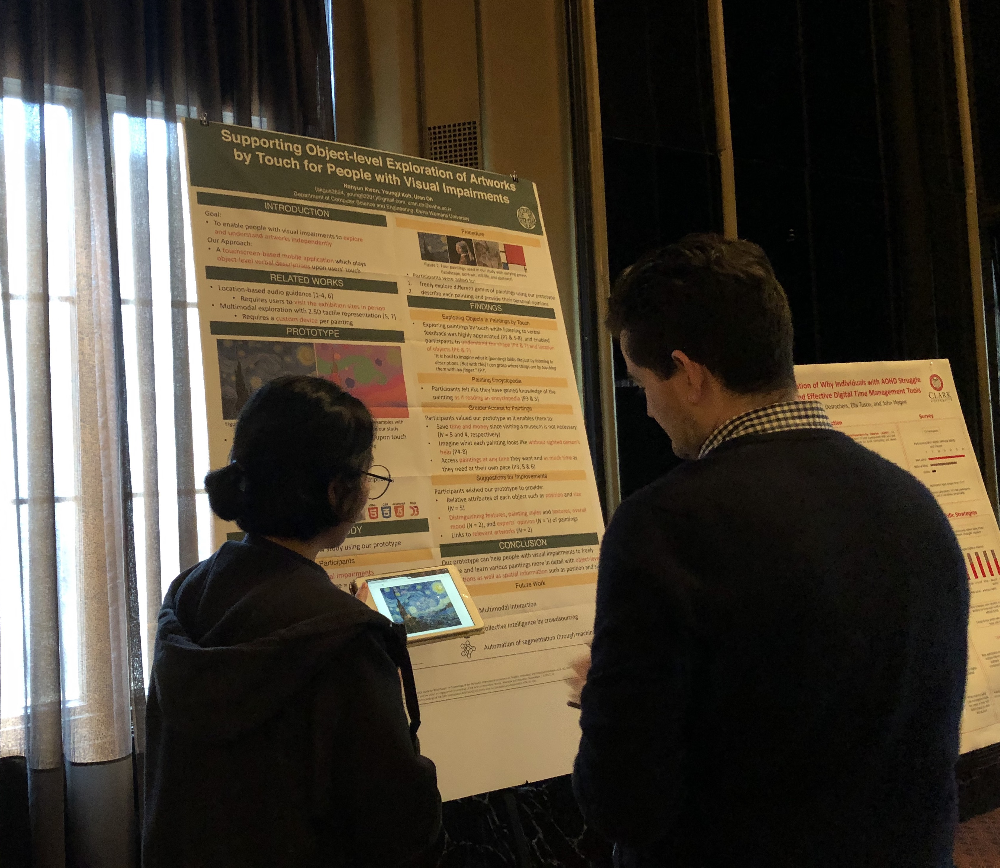

PhD Student, Computer Science, Texas A&M University, TX, US
B.S of Computer Science and Engineering, Ewha Womans University, South Korea
Research Interests
Human-Computer Interaction, Accessibility, Computer Vision, Digital Fabrication
My research objective is making technologies more accessible for people, especially for people who have disabilities. In this process, I want to integrate human-computer interaction to data-driven approaches and computer vision technologies, using various devices such as mobile and wearable.
Currently I am working to improve accessibility of artworks for people with visual impairments powered by crowdsourcing and mobile touchscreen devices.
My adviser is prof. Uran Oh of Human Computer Interaction Lab., Ewha Womans University.
Publication
Supporting a Crowd-powered Accessible Online Art Galleryfor People with Visual Impairments: A Feasibility Study (2020) Nahyun Kwon, Yunjung Lee, and Uran Oh.
Universal Access in the Information Society, To appear
Goal: To enable people with visual impairments to appreciate 2D artworks with their own impression
A touchscreen-based mobile application which provides object- and part-level verbal descriptions upon users' touch while using VoiceOver
Implemented crowdsourcing in collecting annotations of paintings
Provide detailed information about several analysis points of the painting
Supporting Object-level Exploration of Artworks by Touch for People with Visual Impairments. (2019) [PDF|Poster]
Nahyun Kwon, Youngji Koh, and Uran Oh.
In Proceedings of ACM SIGACCESS Conference on Computers and Accessibility (ASSETS). Poster Session.
Goal: To enable people with visual impairments to explore and understand artworks independently
A touchscreen-based mobile application which plays object-level verbal descriptions upon users’ touch while using VoiceOver
Demo: Hearning Masterpiece (Please use iOS touchscreen devices, and turn on VoiceOver)
Age-Gender Estimation Using Deep Learning and Statistics Service for a Customized Marketing and Finding Visitor Patterns. (2018) Nahyun Kwon, Hayoung Choi, Sangha Park, and Dongbo Min.
Korea Software Congress. Poster Session. Hanium ICT Mentoring Competition Awarded
Goal: To find visitor patterns of certain crowded places such as shopping mall to elicit optimal marketing strategies
Implemented Wide ResNet for age-gender estimation and Correlation Tracker of Python OpenCV for face tracking
Data Visualization using D3.js
Projects
Ewha Womans Univ. Graduation Project 'Smart Visitor Pass - Visitor Statistics Service powered by Deep Learning’
[Code]
Synthesized age-gender estimation process by deep learning algorithm and face tracking algorithm to avoid repetitive results of same visitor
Tried a fine-tuning process of the previous Wide ResNet Model to be more adapted to Asian faces, because the model used IMDB-WIKI dataset which mainly contains Western faces
Data analysis of collected visitor data using Python pandas, numpy
Data visualization using D3.js
Related publication: 'Age-Gender Estimation Using Deep Learning and Statistics Service for a Customized Marketing and Finding Visitor Patterns' (2018)
Gave poster presentation at Korea Software Congress 2018, and
Hanium Expo 2018 in a field of Big Data/Machine Learning
Android Messenger with Profanity Filtering & Profanity Usage Statistics
[Code]
Filtering out bad words sent by users and shows statistics on how much bad words are used to give users awareness of the use of bad words
Used opensources which are android messenger using firebase, profanity filtering, and android statistics system
Research & Working Experience
Research Intern at Human Computer Interaction Laboratory
Ewha Womans University, Seoul, South Korea
January 2019 - Present
Participating projects which improves accessibility of 2D artworks for people with visual impairments
Designed crowdsourcing task for collecting annotations of several paintings
Developed VoiceOver compatible system for object- and part-level verbal descriptions of paintings using D3.js
Gave Poster Presentation on enabling people with visual impairments to understand paintings independently at ASSETS'19

Internship as Scraping Engineer at WISHUPON Inc.
Seoul, South Korea
January 2018 - Feburary 2018
Participated to project collecting up-to-date information of products from online shopping malls by extracting desirable information like price, and product name using Regular Expression from HTML document
Participated to system maintenance fixing deprecated scraping module of several websites
Developed dynamic scraping module for commerce data of online shopping malls with Python Selenium
Suggested insights for analysis of collected commercial data
Defined new error types of scraping system for better communication between teammates
Learned how to use version-control system for effective communication
Research Intern at Data Warehousing Laboratory
Ewha Womans University, Seoul, South Korea
November 2016 - Feburary 2018
Participated in study groups for data warehousing using mySQL
Led personal project about scraping and storing information from Steam for game recommendation system
Learned data processing method using Python by taking online courses of Udacity
Education
B.S.
Department of Computer Science and Engineering
Ewha Womans University, Seoul, South Korea
Honors & Scholarship
Semester High Honors, Ewha Womans University
December 2018
Career Planning Scholarship, Ewha Womans University
September 2018
Hanium ICT Mentoring Competition Awarded
November 2018
for Graduation Project 'Smart Visitor Pass'